Todos los músculos del cuerpo humano
Músculos de la cabeza y el cuello
Los músculos de la cabeza y el cuello se dividen en músculos de la expresión facial y músculos de la masticación.
-
Músculo Frontal
El músculo frontal es un músculo plano y delgado que se extiende desde la frente hasta la línea del cabello. Es responsable de elevar las cejas y crear las arrugas horizontales en la frente.
- Origen: Aponeurosis epicraneal
- Inserción: Piel de la frente
- Función: Elevación de las cejas
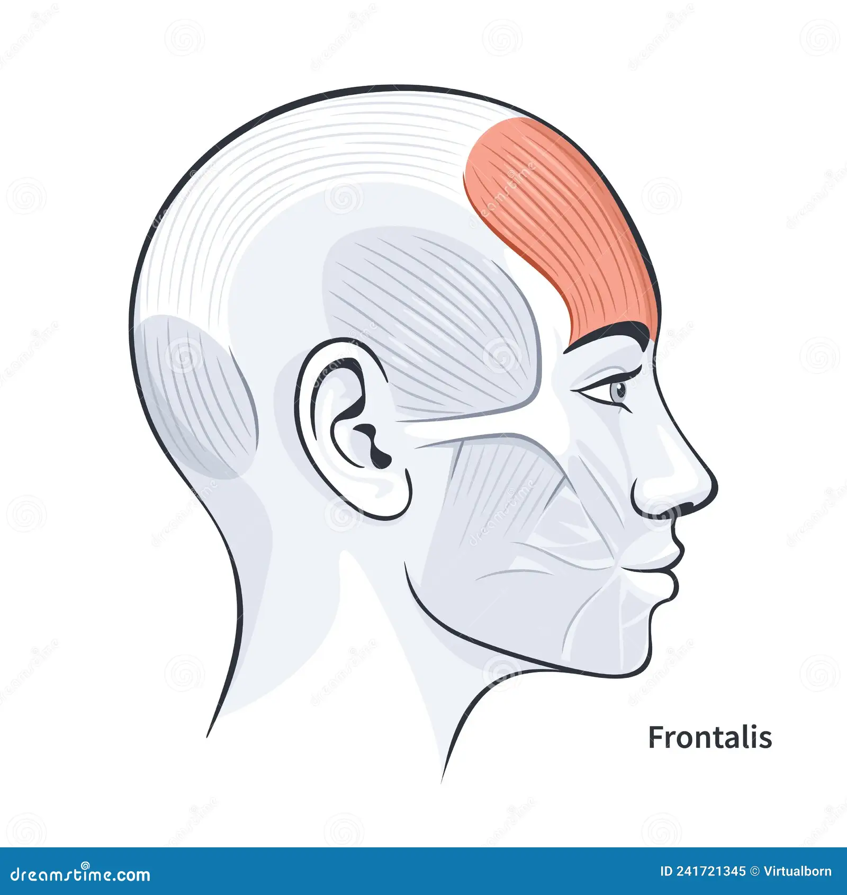
-
Músculo Orbicular de los Ojos
El músculo orbicular de los ojos es un músculo circular que rodea el ojo. Es responsable de cerrar los párpados y proteger el ojo.
- Origen: Huesos nasales y frontal
- Inserción: Piel alrededor del ojo
- Función: Cierre de los párpados

-
Músculo Buccinador
El músculo buccinador es un músculo plano y delgado que forma la pared lateral de la mejilla. Es esencial para la masticación y el silbido.
- Origen: Proceso alveolar del maxilar y mandíbula
- Inserción: Ángulo de la boca
- Función: Masticación y succión

-
Músculo Orbicular de los Labios
El músculo orbicular de los labios es un músculo circular que rodea la boca. Es fundamental para el habla y la expresión facial.
- Origen: Múltiples puntos alrededor de la boca
- Inserción: Piel de los labios
- Función: Cierre de la boca y movimientos labiales
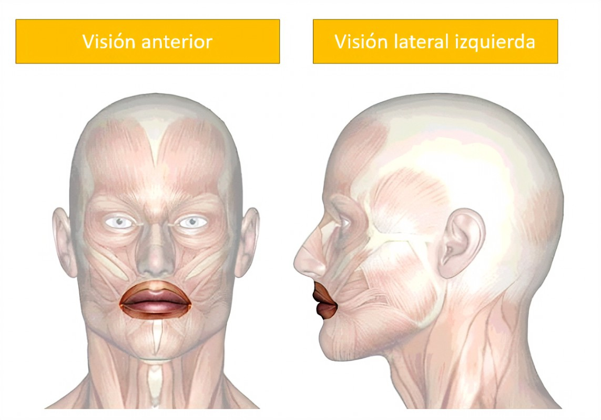
-
Músculo Platisma
El platisma es un músculo superficial del cuello que se extiende desde el tórax hasta la mandíbula. Contribuye a la expresión facial y al movimiento del cuello.
- Origen: Fascia del tórax
- Inserción: Mandíbula y piel de la cara
- Función: Tensión de la piel del cuello

-
Músculo Milohioideo
El milohioideo es un músculo plano que forma el suelo de la boca. Es importante para la deglución y el habla.
- Origen: Línea milohioidea de la mandíbula
- Inserción: Hueso hioides
- Función: Elevación del hueso hioides
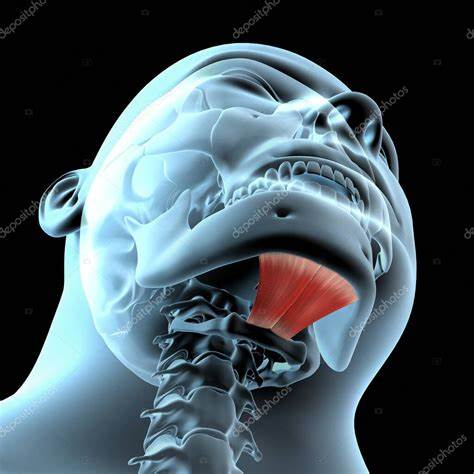
-
Músculo Digástrico
El músculo digástrico tiene dos vientres conectados por un tendón intermedio. Es importante para la deglución y el habla.
- Origen: Vientre anterior: mandíbula; Vientre posterior: apófisis mastoides
- Inserción: Hueso hioides
- Función: Depresión de la mandíbula
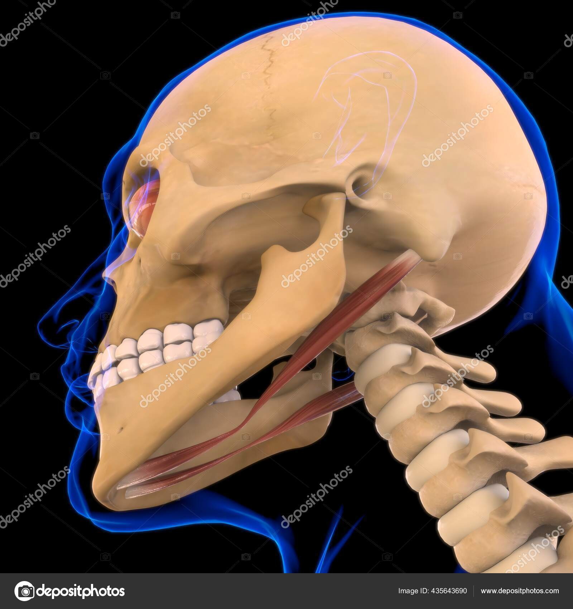
-
Músculo Estilohioideo
El estilohioideo es un músculo delgado que se extiende desde la apófisis estiloides hasta el hueso hioides.
- Origen: Apófisis estiloides del temporal
- Inserción: Hueso hioides
- Función: Elevación del hueso hioides
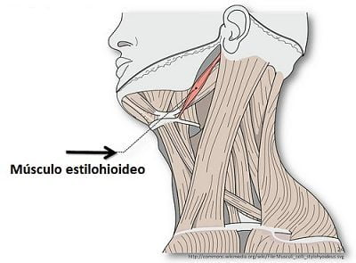
-
Músculo Genihioideo
El genihioideo es un músculo que conecta la mandíbula con el hueso hioides. Contribuye a la deglución y el habla.
- Origen: Apófisis geni de la mandíbula
- Inserción: Hueso hioides
- Función: Elevación del hueso hioides
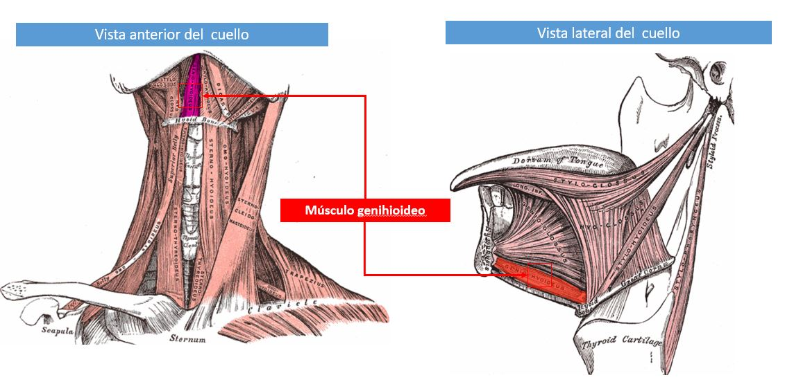
-
Músculo Omohioideo
El omohioideo es un músculo del cuello que tiene dos vientres conectados por un tendón intermedio.
- Origen: Borde superior de la escápula
- Inserción: Hueso hioides
- Función: Depresión del hueso hioides
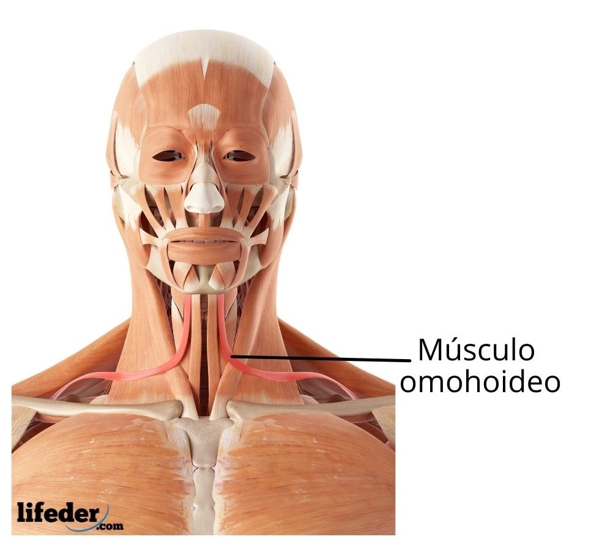
-
Músculo Tirohioideo
El tirohioideo es un músculo corto que conecta el cartílago tiroides con el hueso hioides.
- Origen: Cartílago tiroides
- Inserción: Hueso hioides
- Función: Depresión del hueso hioides

-
Músculo Esternotiroideo
El esternotiroideo es un músculo del cuello que se extiende desde el esternón hasta el cartílago tiroides.
- Origen: Manubrio del esternón
- Inserción: Cartílago tiroides
- Función: Depresión del cartílago tiroides

-
Músculo Occipitofrontal
El occipitofrontal es un músculo que cubre la parte superior del cráneo, formando parte del músculo epicraneal.
- Origen: Hueso occipital
- Inserción: Piel de la frente
- Función: Movimiento del cuero cabelludo
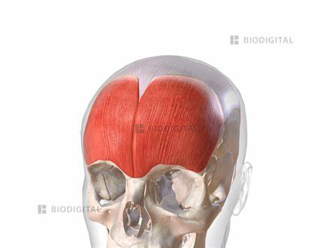
-
Músculo Auricular Anterior
El auricular anterior es uno de los músculos que mueven la oreja. Es el más pequeño de los músculos auriculares.
- Origen: Fascia temporal
- Inserción: Hélix de la oreja
- Función: Movimiento de la oreja hacia adelante

-
Músculo Auricular Superior
El auricular superior es el más grande de los músculos auriculares y se encarga de elevar la oreja.
- Origen: Aponeurosis epicraneal
- Inserción: Superficie craneal de la oreja
- Función: Elevación de la oreja

-
Músculo Risorio
El risorio es un músculo delgado que contribuye a la expresión de la sonrisa.
- Origen: Fascia parotídea
- Inserción: Ángulo de la boca
- Función: Tracción lateral de la comisura labial

-
Músculo Cigomático Mayor
El cigomático mayor es un músculo que contribuye a la expresión de la sonrisa y la risa.
- Origen: Hueso cigomático
- Inserción: Ángulo de la boca
- Función: Elevación y tracción lateral de la comisura labial
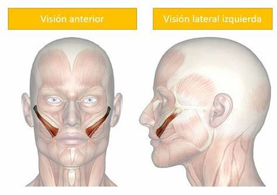
-
Músculo Cigomático Menor
El cigomático menor es un músculo más pequeño que el mayor y contribuye a la expresión facial.
- Origen: Hueso cigomático
- Inserción: Piel del labio superior
- Función: Elevación del labio superior

-
Músculo Depresor del Labio Inferior
El depresor del labio inferior es un músculo que contribuye a la expresión facial, especialmente a la expresión de tristeza.
- Origen: Línea oblicua de la mandíbula
- Inserción: Piel del labio inferior
- Función: Depresión del labio inferior

-
Músculo Mentoneano
El mentoneano es un músculo pequeño que contribuye a la expresión facial y al movimiento del mentón.
- Origen: Fosa incisiva de la mandíbula
- Inserción: Piel del mentón
- Función: Elevación y protrusión del labio inferior
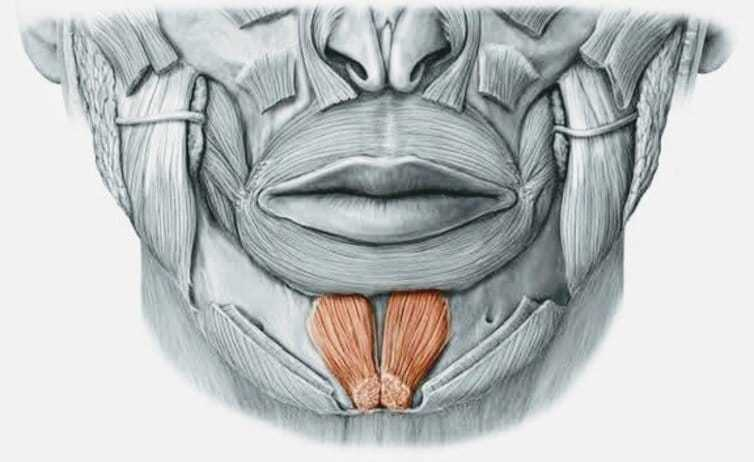
-
Músculo Temporal
El músculo temporal es un músculo de la masticación que se encuentra en la fosa temporal.
- Origen: Fosa temporal y fascia temporal
- Inserción: Apófisis coronoides de la mandíbula
- Función: Elevación y retracción de la mandíbula

-
Músculo Masetero
El masetero es un músculo potente de la masticación que se encuentra en la mejilla.
- Origen: Arco cigomático
- Inserción: Rama de la mandíbula
- Función: Elevación y protrusión de la mandíbula

-
Músculo Pterigoideo Lateral
El pterigoideo lateral es un músculo de la masticación que se encuentra en la fosa infratemporal.
- Origen: Ala mayor del esfenoides y apófisis pterigoides
- Inserción: Cóndilo de la mandíbula y disco articular
- Función: Protrusión y movimiento lateral de la mandíbula

-
Músculo Pterigoideo Medial
El pterigoideo medial es un músculo de la masticación que se encuentra en la fosa infratemporal.
- Origen: Apófisis pterigoides del esfenoides
- Inserción: Ángulo de la mandíbula
- Función: Elevación y protrusión de la mandíbula

-
Músculo Esternocleidomastoideo
El esternocleidomastoideo es un músculo largo y superficial del cuello que forma parte de la musculatura cervical.
- Origen: Manubrio del esternón y tercio medial de la clavícula
- Inserción: Apófisis mastoides del temporal
- Función: Rotación y flexión de la cabeza

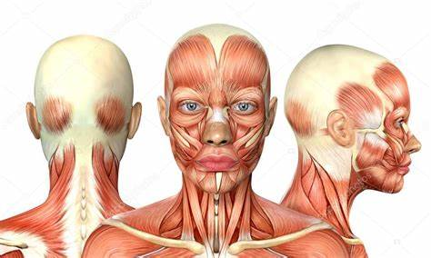
Músculos del tronco
Los músculos del tronco se dividen en músculos de la pared torácica, abdominal y espalda.
-
Músculo Pectoral Menor
El pectoral menor es un músculo triangular que se encuentra debajo del pectoral mayor. Estabiliza la escápula y ayuda en los movimientos del hombro.
- Origen: Costillas 3-5
- Inserción: Apófisis coracoides de la escápula
- Función: Estabilización de la escápula
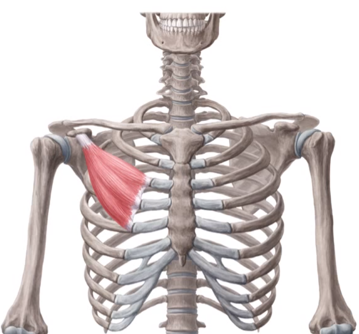
-
Músculo Serrato Anterior
El serrato anterior es un músculo que se origina en las costillas y se inserta en la escápula. Es esencial para la estabilidad del hombro.
- Origen: Costillas 1-8
- Inserción: Borde medial de la escápula
- Función: Rotación y abducción de la escápula

-
Músculo Subclavio
El subclavio es un pequeño músculo que se encuentra debajo de la clavícula. Protege y estabiliza la articulación esternoclavicular.
- Origen: Primera costilla
- Inserción: Clavícula
- Función: Estabilización de la clavícula

-
Músculo Recto Posterior Menor
El recto posterior menor es un músculo profundo de la espalda que ayuda en la extensión y rotación de la cabeza.
- Origen: Atlas (C1)
- Inserción: Hueso occipital
- Función: Extensión de la cabeza
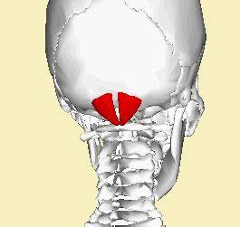
-
Músculo Transverso del Abdomen
El transverso del abdomen es el más profundo de los músculos abdominales. Actúa como un corsé natural.
- Origen: Costillas 7-12, fascia toracolumbar
- Inserción: Línea alba
- Función: Compresión abdominal

-
Músculo Oblicuo Interno
El oblicuo interno es un músculo abdominal que forma la capa media de la pared abdominal.
- Origen: Fascia toracolumbar, cresta ilíaca
- Inserción: Costillas 10-12, línea alba
- Función: Rotación y flexión del tronco
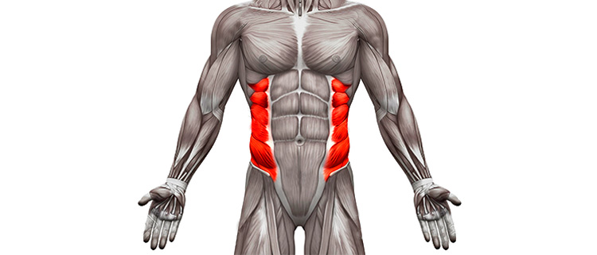
-
Músculo Elevador de la Escápula
El elevador de la escápula es un músculo que conecta la columna cervical con la escápula.
- Origen: Apófisis transversas de C1-C4
- Inserción: Ángulo superior de la escápula
- Función: Elevación de la escápula

-
Músculos Romboides Mayor y Menor
Los músculos romboides son dos músculos que conectan la columna vertebral con la escápula.
- Origen: Procesos espinosos de C7-T5
- Inserción: Borde medial de la escápula
- Función: Retracción de la escápula

-
Músculo Erector de la Columna
El erector de la columna es un grupo de músculos que mantienen la postura y extienden la columna vertebral.
- Origen: Sacro, ilion, apófisis espinosas
- Inserción: Costillas, vértebras, cráneo
- Función: Extensión de la columna

-
Músculo Semiespinoso
El semiespinoso es un músculo profundo de la espalda que contribuye a la extensión y rotación de la columna.
- Origen: Apófisis transversas de T1-T12
- Inserción: Apófisis espinosas de C2-T4
- Función: Extensión y rotación de la columna

-
Músculos Interespinosos e Intertransversos
Estos músculos profundos conectan las vértebras adyacentes y ayudan en la estabilidad de la columna.
- Origen: Apófisis espinosas y transversas
- Inserción: Apófisis espinosas y transversas adyacentes
- Función: Estabilización vertebral

-
Músculo Cuadrado Lumbar
El cuadrado lumbar es un músculo profundo que estabiliza la columna lumbar y la pelvis.
- Origen: Cresta ilíaca
- Inserción: Costilla 12, apófisis transversas L1-L4
- Función: Estabilización lumbar
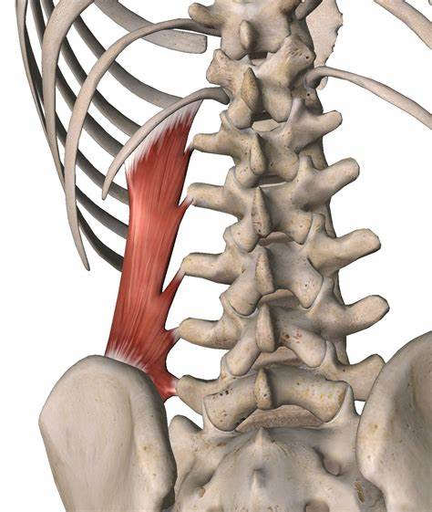
-
Músculo Sacroespinal
El sacroespinal es un músculo profundo que se extiende desde el sacro hasta las vértebras torácicas.
- Origen: Sacro
- Inserción: Apófisis espinosas torácicas
- Función: Extensión de la columna
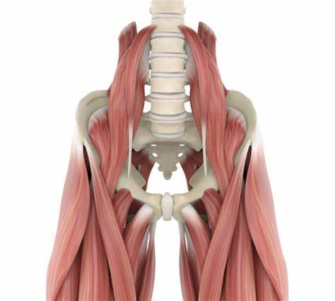
-
Músculo Transversoespinoso
El transversoespinoso es un grupo de músculos profundos que conectan las apófisis transversas con las espinosas.
- Origen: Apófisis transversas
- Inserción: Apófisis espinosas
- Función: Rotación y extensión de la columna
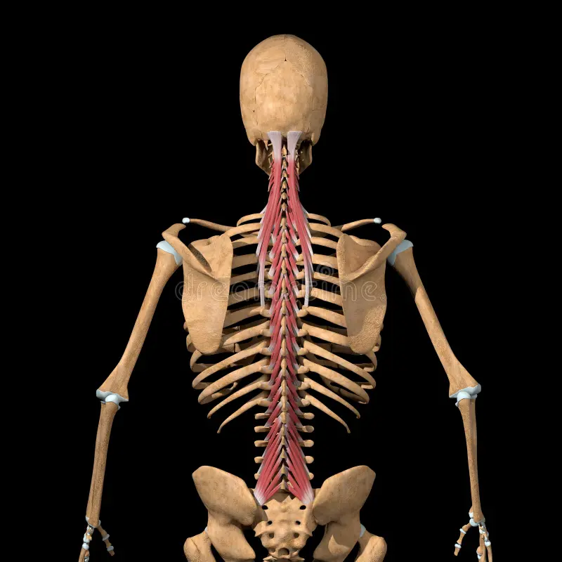
-
Músculo Multífido
El multífido es un músculo profundo que proporciona estabilidad segmentaria a la columna vertebral.
- Origen: Apófisis transversas
- Inserción: Apófisis espinosas
- Función: Estabilización vertebral

-
Músculos Esplenios
Los músculos esplenios (de la cabeza y del cuello) son músculos superficiales que ayudan en los movimientos de la cabeza y el cuello.
- Origen: Apófisis espinosas de C7-T6
- Inserción: Hueso occipital, apófisis mastoides
- Función: Extensión y rotación de la cabeza
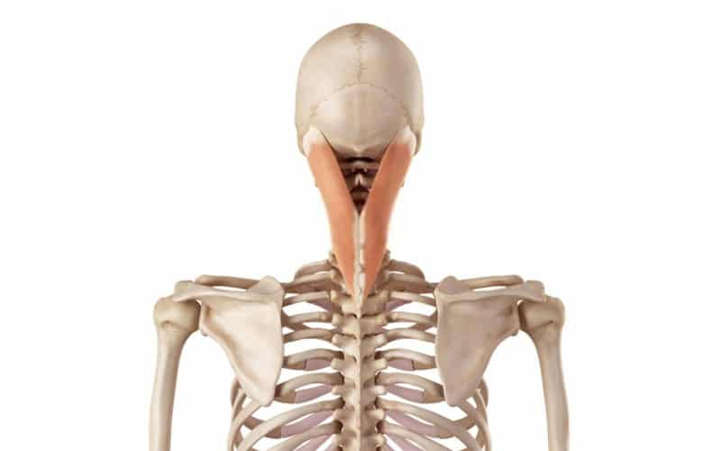
-
Músculos Intercostales Internos
Los intercostales internos son músculos que se encuentran entre las costillas y ayudan en la espiración.
- Origen: Borde inferior de la costilla superior
- Inserción: Borde superior de la costilla inferior
- Función: Depresión de las costillas durante la espiración

-
Músculos Intercostales Externos
Los intercostales externos son músculos que se encuentran entre las costillas y ayudan en la inspiración.
- Origen: Borde inferior de la costilla superior
- Inserción: Borde superior de la costilla inferior
- Función: Elevación de las costillas durante la inspiración
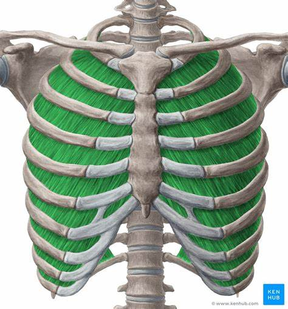
-
Músculo Recto Posterior Mayor de la Cabeza
El recto posterior mayor de la cabeza es un músculo profundo que ayuda en la extensión y rotación de la cabeza.
- Origen: Apófisis espinosa del axis (C2)
- Inserción: Hueso occipital
- Función: Extensión y rotación de la cabeza

-
Músculo Oblicuo Externo del Abdomen
El oblicuo externo del abdomen es el más superficial de los músculos abdominales laterales.
- Origen: Costillas 5-12
- Inserción: Línea alba, cresta ilíaca y pubis
- Función: Flexión y rotación del tronco
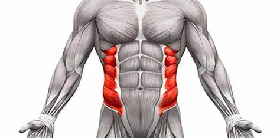
-
Músculo Esplenio Cervical
El esplenio cervical es un músculo que se extiende desde la columna torácica hasta las vértebras cervicales.
- Origen: Apófisis espinosas de T3-T6
- Inserción: Apófisis transversas de C1-C3
- Función: Extensión y rotación del cuello
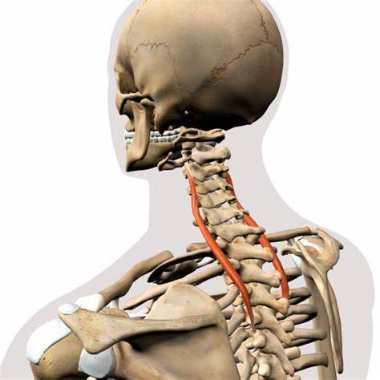
-
Músculo Largo del Cuello
El músculo largo del cuello es un músculo profundo que flexiona el cuello y la cabeza.
- Origen: Cuerpos vertebrales de C5-T3
- Inserción: Tubérculo anterior del atlas
- Función: Flexión del cuello
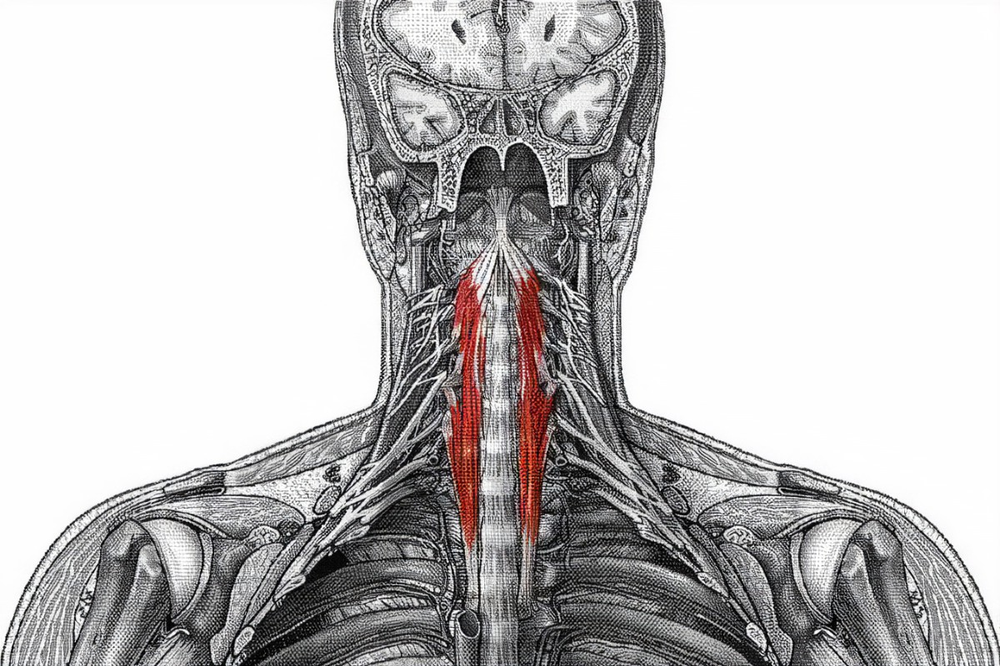
-
Músculo Largo de la Cabeza
El músculo largo de la cabeza es un músculo profundo que flexiona la cabeza.
- Origen: Apófisis transversas de C3-C6
- Inserción: Hueso occipital
- Función: Flexión de la cabeza
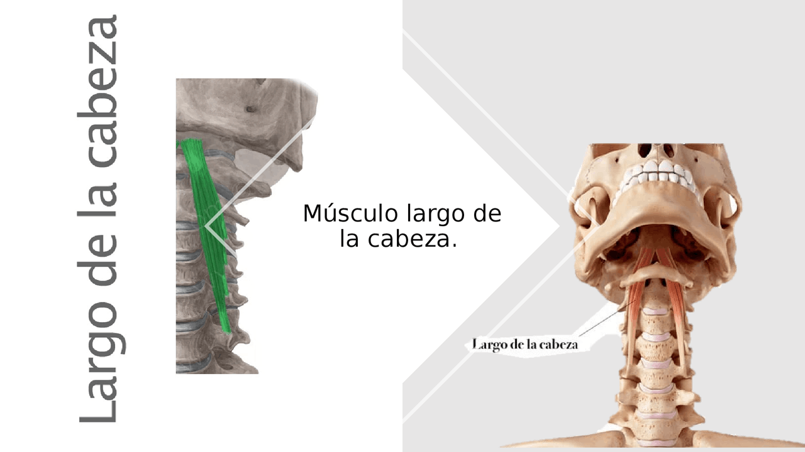
-
Músculo Elevador del Ano
El elevador del ano es un músculo del suelo pélvico que soporta las vísceras pélvicas.
- Origen: Huesos pélvicos
- Inserción: Cóccix y línea media
- Función: Soporte de vísceras pélvicas

-
Músculo Esfínter Interno del Ano
El esfínter interno del ano es un músculo involuntario que mantiene la continencia anal.
- Origen: Continuación de la capa circular del recto
- Inserción: Línea media
- Función: Control involuntario de la continencia anal
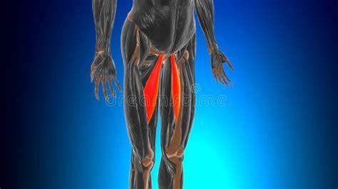
-
Músculo Esfínter Interno de la Uretra
El esfínter interno de la uretra es un músculo involuntario que mantiene la continencia urinaria.
- Origen: Continuación de la capa muscular de la vejiga
- Inserción: Línea media
- Función: Control involuntario de la continencia urinaria

-
Músculo Pectoral Mayor
El pectoral mayor es un músculo grande y superficial del tórax que forma la pared anterior de la axila.
- Origen: Clavícula, esternón y cartílagos costales
- Inserción: Cresta del tubérculo mayor del húmero
- Función: Aducción, rotación interna y flexión del brazo
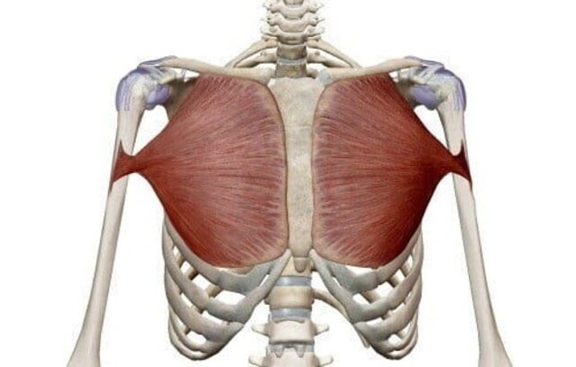
-
Músculo Deltoides
El deltoides es un músculo triangular que forma el contorno del hombro, dividido en tres porciones.
- Origen: Clavícula, acromion y espina de la escápula
- Inserción: Tuberosidad deltoidea del húmero
- Función: Abducción, flexión y extensión del brazo

-
Músculo Trapecio
El trapecio es un músculo grande y superficial de la espalda que forma un trapecio.
- Origen: Línea nucal superior, protuberancia occipital externa, ligamento nucal y apófisis espinosas de C7-T12
- Inserción: Clavícula, acromion y espina de la escápula
- Función: Elevación, retracción y rotación de la escápula
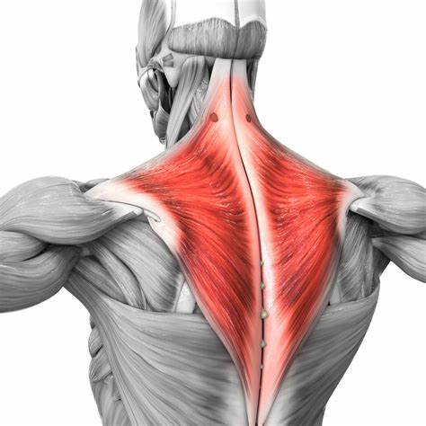
-
Músculo Dorsal Ancho
El dorsal ancho es el músculo más grande de la espalda, con forma de abanico.
- Origen: Apófisis espinosas de T7-L5, cresta ilíaca y costillas 9-12
- Inserción: Surco intertubercular del húmero
- Función: Aducción, extensión y rotación interna del brazo
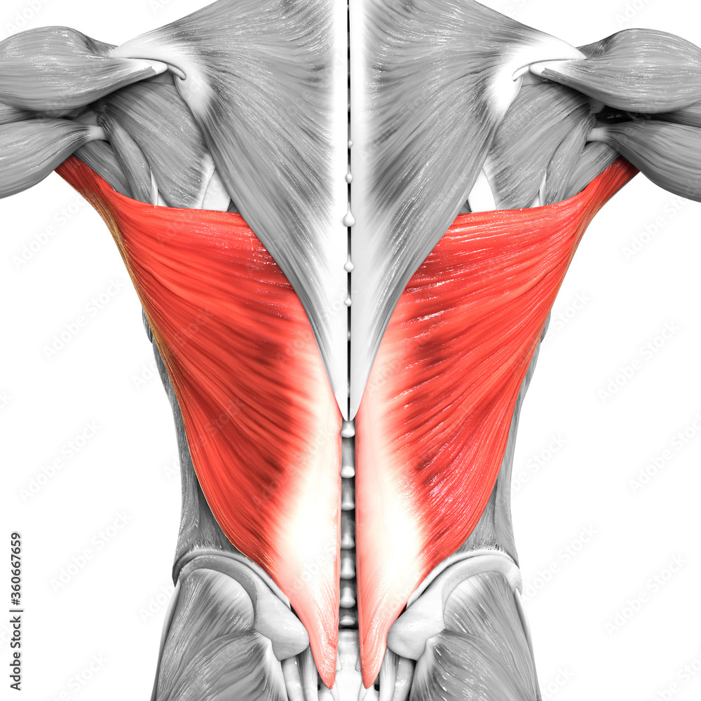
-
Músculo Redondo Mayor
El redondo mayor es un músculo grueso y redondeado que forma parte de la pared posterior de la axila.
- Origen: Ángulo inferior de la escápula
- Inserción: Cresta del tubérculo menor del húmero
- Función: Aducción, extensión y rotación interna del brazo
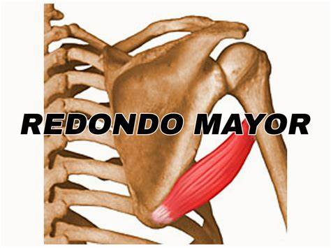
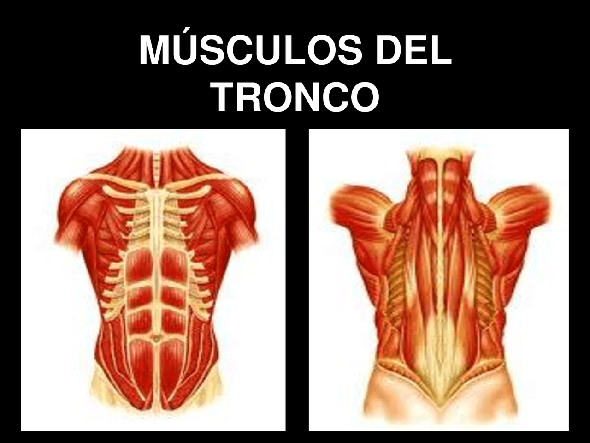
Músculos de la extremidad superior
Los músculos de la extremidad superior se dividen en músculos del antebrazo y de la mano, responsables de los movimientos de la muñeca y los dedos.
-
Músculo Supinador
El supinador es un músculo profundo del antebrazo que permite la rotación del antebrazo hacia arriba.
- Origen: Epicóndilo lateral del húmero y cresta supinadora del cúbito
- Inserción: Superficie lateral del radio
- Función: Supinación del antebrazo
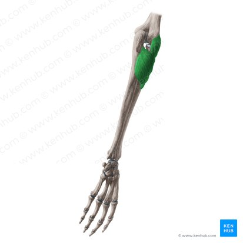
-
Músculo Extensor Radial Largo del Carpo
El extensor radial largo del carpo es un músculo superficial que extiende y abduce la muñeca.
- Origen: Cresta supracondílea lateral del húmero
- Inserción: Base del segundo metacarpiano
- Función: Extensión y abducción de la muñeca
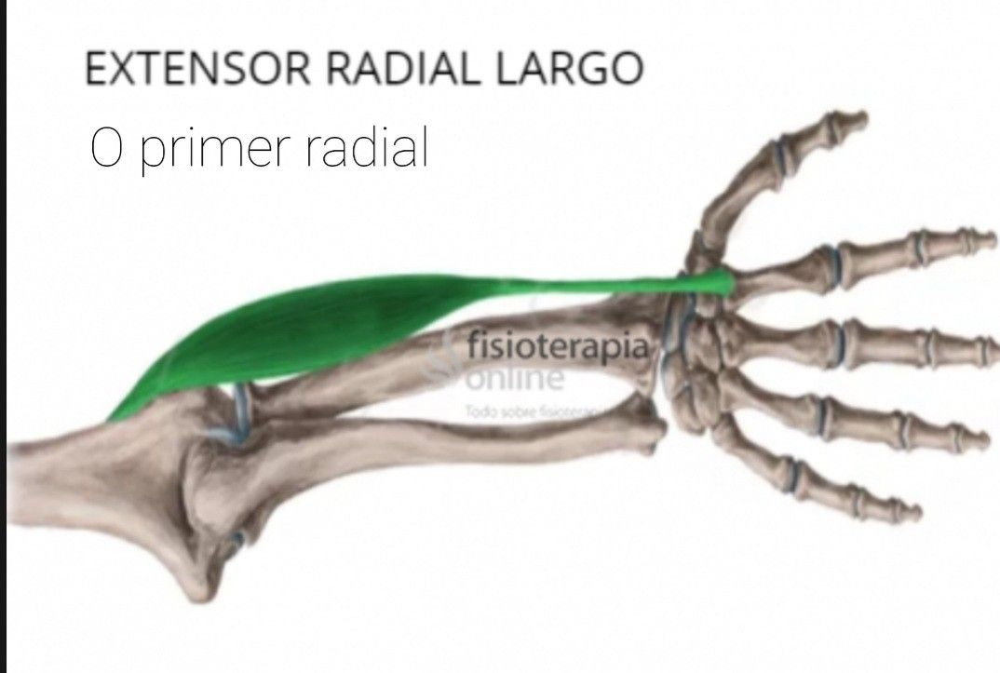
-
Músculo Extensor de los Dedos
El extensor de los dedos es un músculo que extiende los dedos índice, medio, anular y meñique.
- Origen: Epicóndilo lateral del húmero
- Inserción: Falanges medias y distales de los dedos 2-5
- Función: Extensión de los dedos

-
Músculo Extensor del Meñique
El extensor del meñique es un músculo que extiende específicamente el dedo meñique.
- Origen: Epicóndilo lateral del húmero
- Inserción: Falanges del meñique
- Función: Extensión del meñique

-
Músculo Extensor Ulnar del Carpo
El extensor ulnar del carpo es un músculo que extiende y aduce la muñeca.
- Origen: Epicóndilo lateral del húmero
- Inserción: Base del quinto metacarpiano
- Función: Extensión y aducción de la muñeca

-
Músculo Abductor Largo del Pulgar
El abductor largo del pulgar es un músculo que abduce el pulgar y la muñeca.
- Origen: Cúbito y radio
- Inserción: Base del primer metacarpiano
- Función: Abducción del pulgar

-
Músculo Extensor Largo del Pulgar
El extensor largo del pulgar es un músculo que extiende la articulación interfalángica del pulgar.
- Origen: Cúbito y membrana interósea
- Inserción: Falange distal del pulgar
- Función: Extensión del pulgar
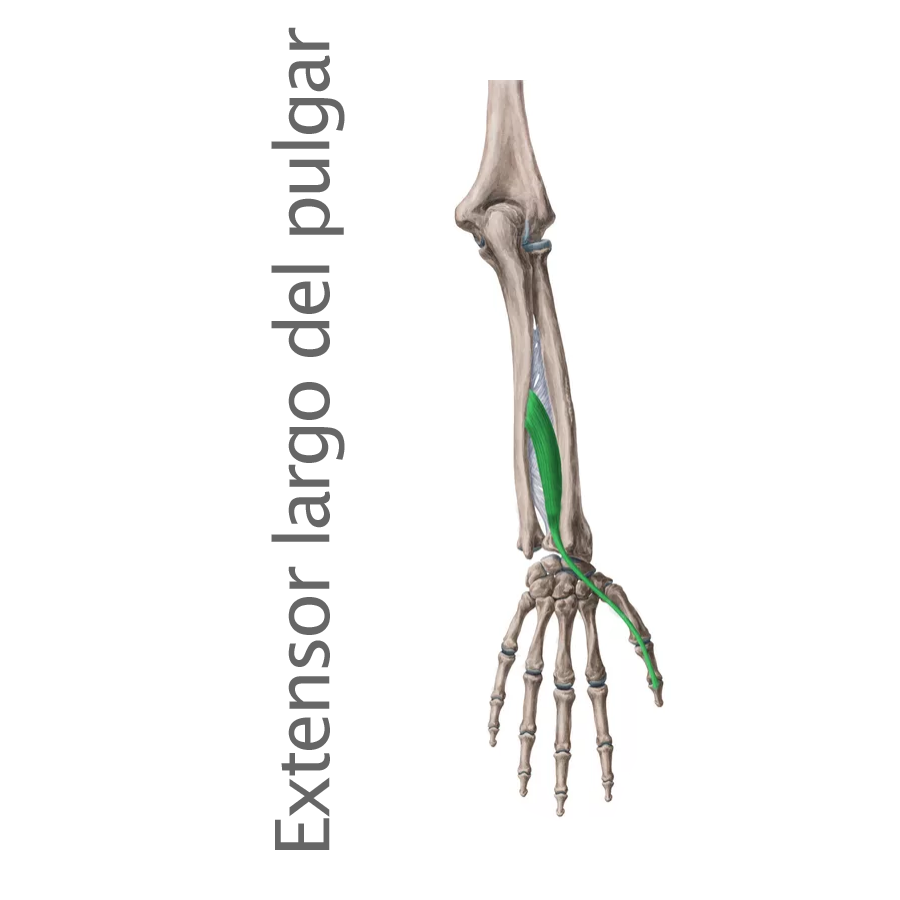
-
Músculo Extensor Corto del Pulgar
El extensor corto del pulgar es un músculo que extiende la articulación metacarpofalángica del pulgar.
- Origen: Radio y membrana interósea
- Inserción: Base de la falange proximal del pulgar
- Función: Extensión de la articulación MCP del pulgar
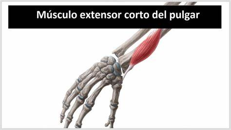
-
Músculo Flexor Radial del Carpo
El flexor radial del carpo es un músculo que flexiona y abduce la muñeca.
- Origen: Epicóndilo medial del húmero
- Inserción: Base del segundo y tercer metacarpiano
- Función: Flexión y abducción de la muñeca
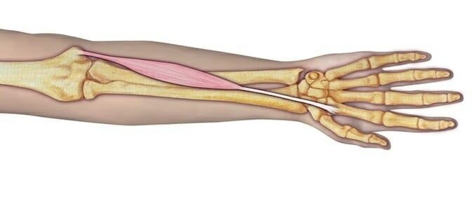
-
Músculo Palmar Largo
El palmar largo es un músculo que tensa la aponeurosis palmar y flexiona la muñeca.
- Origen: Epicóndilo medial del húmero
- Inserción: Aponeurosis palmar
- Función: Flexión de la muñeca

-
Músculo Flexor Ulnar del Carpo
El flexor ulnar del carpo es un músculo que flexiona y aduce la muñeca.
- Origen: Epicóndilo medial del húmero y olécranon
- Inserción: Pisiforme, gancho del ganchoso y quinto metacarpiano
- Función: Flexión y aducción de la muñeca

-
Músculo Flexor Superficial de los Dedos
El flexor superficial de los dedos es un músculo que flexiona las articulaciones interfalángicas proximales.
- Origen: Epicóndilo medial del húmero, cúbito y radio
- Inserción: Falanges medias de los dedos 2-5
- Función: Flexión de las articulaciones PIP
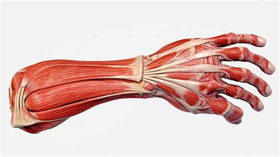
-
Músculo Flexor Profundo de los Dedos
El flexor profundo de los dedos es un músculo que flexiona las articulaciones interfalángicas distales.
- Origen: Cúbito y membrana interósea
- Inserción: Falanges distales de los dedos 2-5
- Función: Flexión de las articulaciones DIP
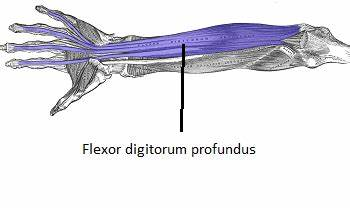
-
Músculo Flexor Largo del Pulgar
El flexor largo del pulgar es un músculo que flexiona la articulación interfalángica del pulgar.
- Origen: Radio y membrana interósea
- Inserción: Falange distal del pulgar
- Función: Flexión del pulgar

-
Músculo Abductor del Pulgar
El abductor del pulgar es un músculo que abduce el pulgar en la articulación carpometacarpiana.
- Origen: Escafoides y trapecio
- Inserción: Base de la falange proximal del pulgar
- Función: Abducción del pulgar
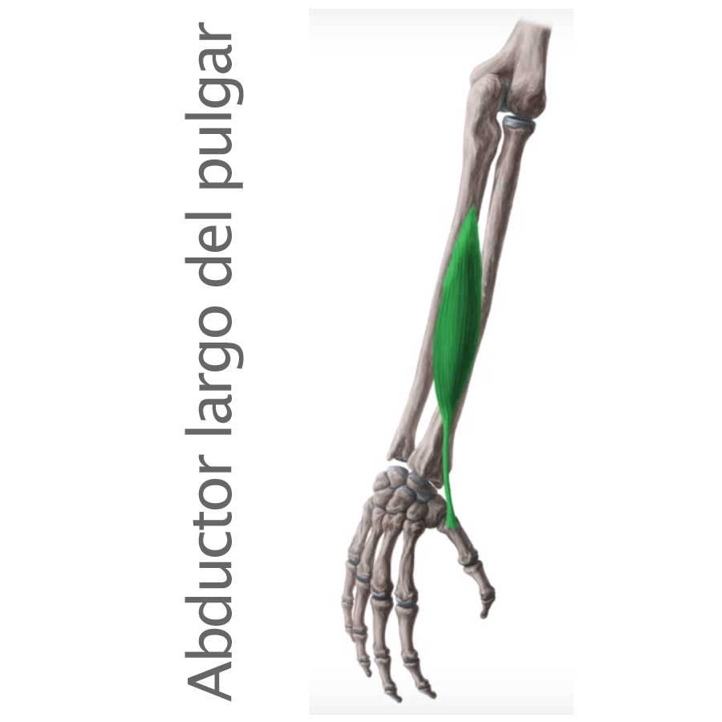
-
Músculo Flexor Corto del Pulgar
El flexor corto del pulgar es un músculo que flexiona la articulación metacarpofalángica del pulgar.
- Origen: Trapecio y retináculo flexor
- Inserción: Base de la falange proximal del pulgar
- Función: Flexión de la articulación MCP del pulgar
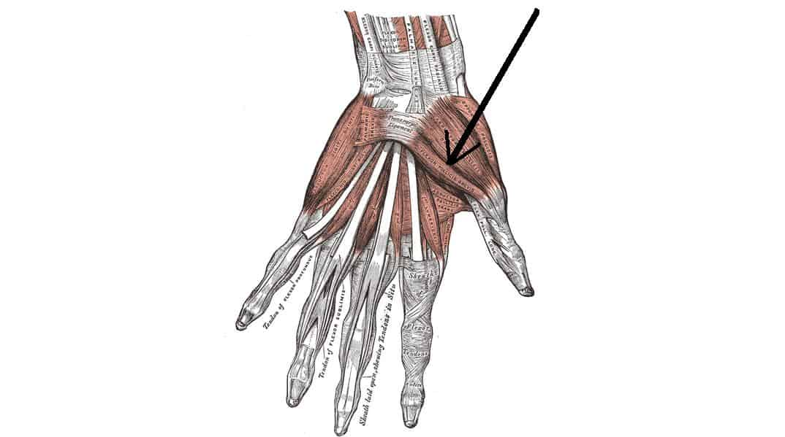
-
Músculo Oponente del Pulgar
El oponente del pulgar es un músculo que permite la oposición del pulgar a los otros dedos.
- Origen: Trapecio y retináculo flexor
- Inserción: Primer metacarpiano
- Función: Oposición del pulgar
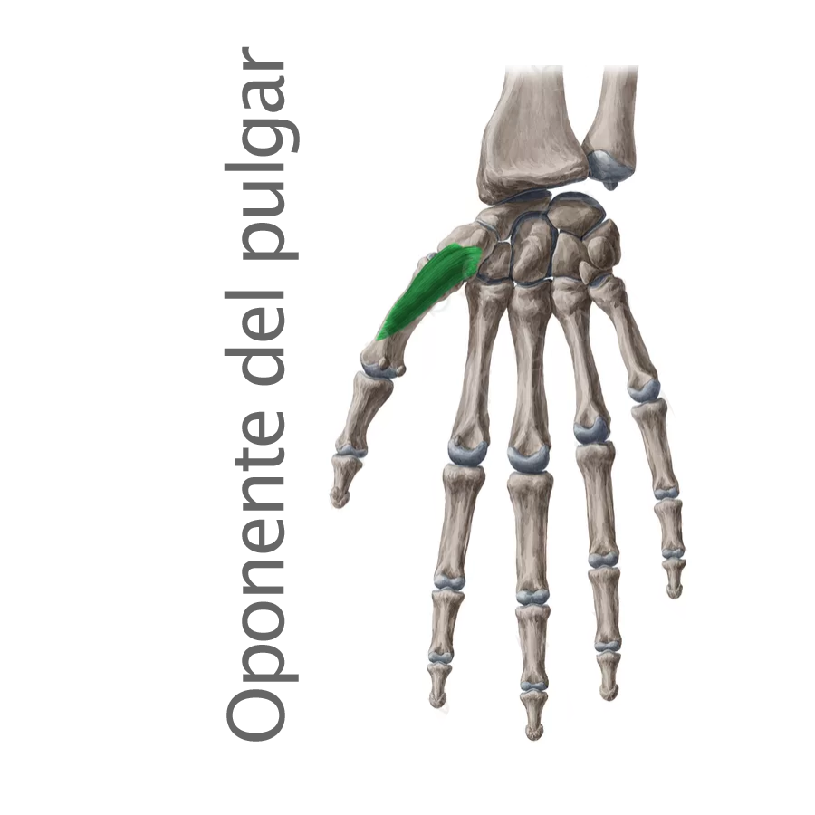
-
Músculos Lumbricales de la Mano
Los lumbricales son cuatro músculos que flexionan las articulaciones metacarpofalángicas y extienden las interfalángicas.
- Origen: Tendones del flexor profundo de los dedos
- Inserción: Expansión extensora de los dedos 2-5
- Función: Flexión MCP y extensión IP

-
Músculos Interóseos Dorsales
Los interóseos dorsales son cuatro músculos que abducen los dedos y ayudan en la flexión MCP y extensión IP.
- Origen: Metacarpianos adyacentes
- Inserción: Expansión extensora y falanges proximales
- Función: Abducción de los dedos
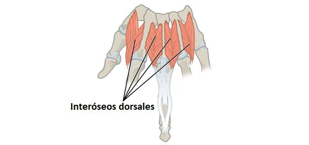
-
Músculo Braquial Anterior
El braquial anterior es un músculo profundo del brazo que es el principal flexor del codo.
- Origen: Mitad distal de la cara anterior del húmero
- Inserción: Apófisis coronoides del cúbito
- Función: Flexión del codo

-
Músculo Ancóneo
El ancóneo es un pequeño músculo que ayuda en la extensión del codo y la estabilidad de la articulación.
- Origen: Epicóndilo lateral del húmero
- Inserción: Superficie posterior del cúbito
- Función: Extensión del codo

-
Músculo Pronador Teres
El pronador teres es un músculo que prona el antebrazo y ayuda en la flexión del codo.
- Origen: Epicóndilo medial del húmero y apófisis coronoides del cúbito
- Inserción: Radio
- Función: Pronación del antebrazo
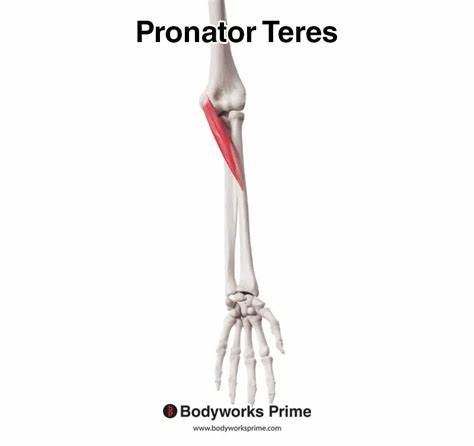
-
Músculo Pronador Cuadrado
El pronador cuadrado es un músculo profundo que es el principal pronador del antebrazo.
- Origen: Cuarto distal del cúbito
- Inserción: Cuarto distal del radio
- Función: Pronación del antebrazo
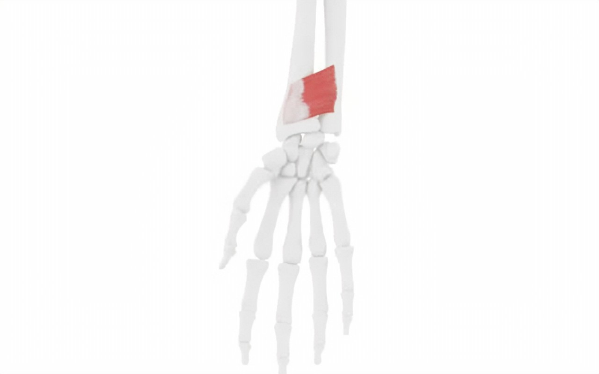
-
Músculo Extensor del Índice
El extensor del índice es un músculo que extiende específicamente el dedo índice.
- Origen: Cúbito y membrana interósea
- Inserción: Expansión extensora del índice
- Función: Extensión del índice
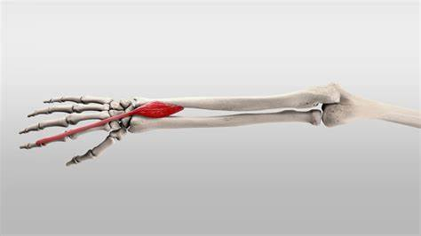
-
Músculo Flexor Corto del Meñique
El flexor corto del meñique es un músculo que flexiona la articulación metacarpofalángica del meñique.
- Origen: Gancho del ganchoso y retináculo flexor
- Inserción: Base de la falange proximal del meñique
- Función: Flexión del meñique
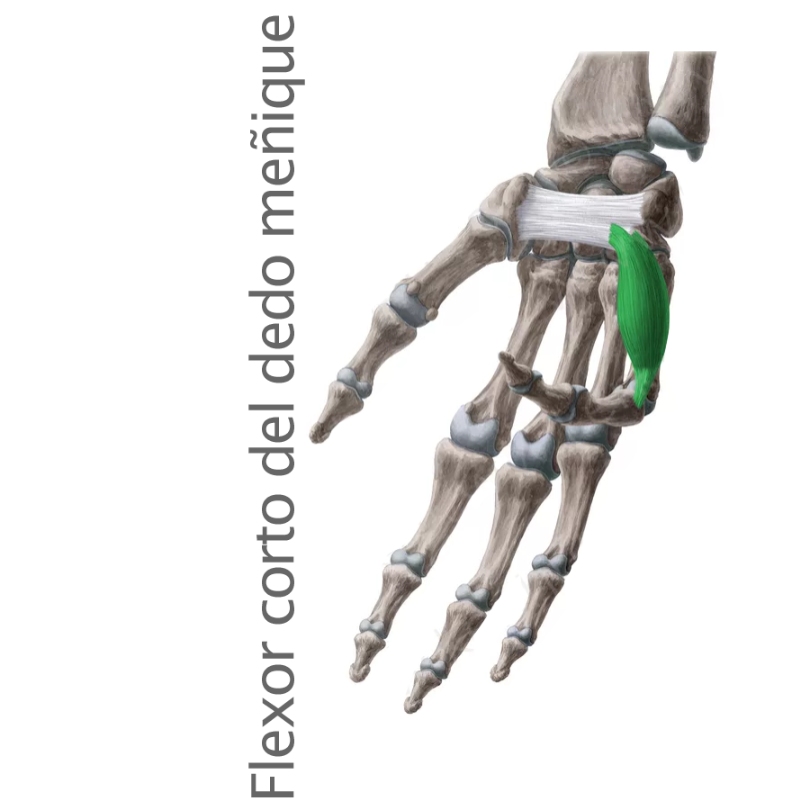
-
Músculo Oponente del Meñique
El oponente del meñique es un músculo que permite la oposición del meñique.
- Origen: Gancho del ganchoso y retináculo flexor
- Inserción: Quinto metacarpiano
- Función: Oposición del meñique
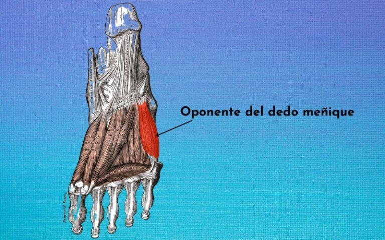
-
Músculo Abductor del Meñique
El abductor del meñique es un músculo que abduce el meñique en la articulación metacarpofalángica.
- Origen: Pisiforme y tendón del flexor ulnar del carpo
- Inserción: Base de la falange proximal del meñique
- Función: Abducción del meñique
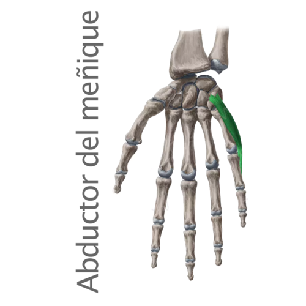
-
Músculos Interóseos Palmares
Los interóseos palmares son tres músculos que aducen los dedos y ayudan en la flexión MCP y extensión IP.
- Origen: Metacarpianos
- Inserción: Expansión extensora y falanges proximales
- Función: Aducción de los dedos
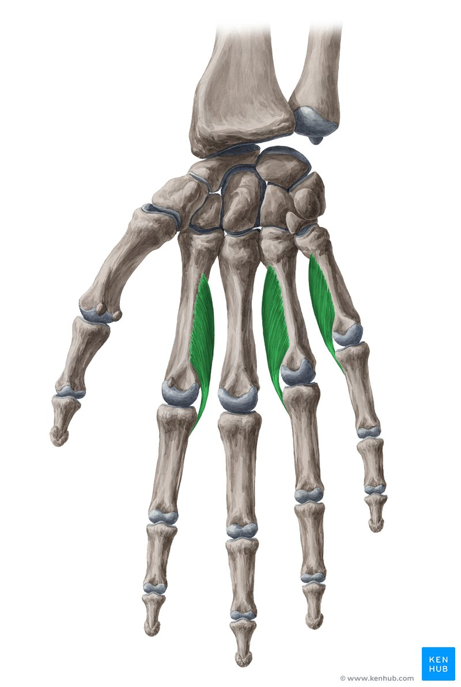
-
Músculos Lumbricales del Pie
Los lumbricales del pie son cuatro músculos que flexionan las articulaciones metatarsofalángicas y extienden las interfalángicas.
- Origen: Tendones del flexor largo de los dedos
- Inserción: Expansión extensora de los dedos 2-5
- Función: Flexión MTP y extensión IP
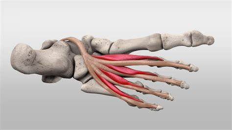
-
Músculo Bíceps Braquial
El bíceps braquial es un músculo de dos cabezas que forma la prominencia anterior del brazo.
- Origen: Cabeza larga: tuberosidad supraglenoidea de la escápula; Cabeza corta: apófisis coracoides
- Inserción: Tuberosidad del radio y aponeurosis bicipital
- Función: Flexión del codo y supinación del antebrazo

-
Músculo Tríceps Braquial
El tríceps braquial es un músculo de tres cabezas que forma la masa muscular posterior del brazo.
- Origen: Cabeza larga: tuberosidad infraglenoidea; Cabeza lateral: cara posterior del húmero; Cabeza medial: cara posterior del húmero
- Inserción: Olécranon del cúbito
- Función: Extensión del codo
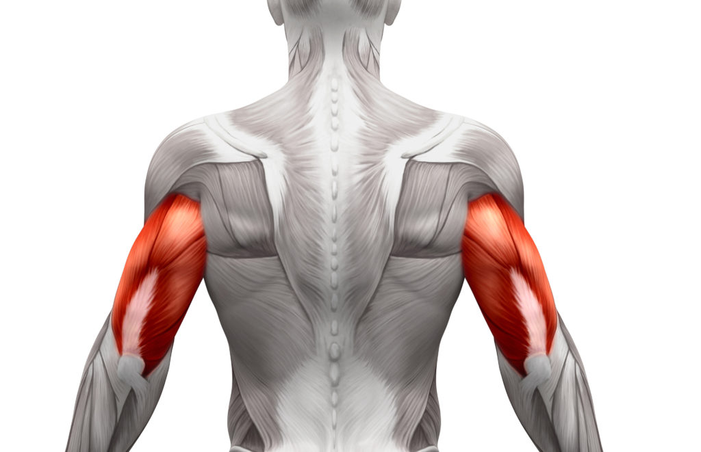
-
Músculo Coracobraquial
El coracobraquial es un músculo profundo que se encuentra en la parte superior del brazo.
- Origen: Apófisis coracoides de la escápula
- Inserción: Tercio medio de la cara medial del húmero
- Función: Flexión y aducción del brazo
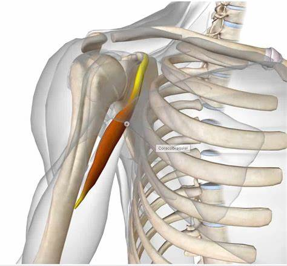
-
Músculo Redondo Menor
El redondo menor es un músculo pequeño y redondeado que forma parte del manguito rotador.
- Origen: Borde lateral de la escápula
- Inserción: Tubérculo mayor del húmero
- Función: Rotación externa y aducción del brazo
-
Músculo Subescapular
El subescapular es un músculo triangular que se encuentra en la cara anterior de la escápula.
- Origen: Fosa subescapular de la escápula
- Inserción: Tubérculo menor del húmero
- Función: Rotación interna y aducción del brazo
Músculos de la extremidad inferior
Los músculos de la extremidad inferior se dividen en músculos de la cadera, muslo, pierna y pie, responsables de la locomoción y estabilidad.
-
Músculo Psoas Mayor
El psoas mayor es un músculo profundo que conecta la columna lumbar con el fémur, siendo crucial para la flexión de la cadera.
- Origen: Vértebras lumbares T12-L5
- Inserción: Trocánter menor del fémur
- Función: Flexión de la cadera y estabilización lumbar
-
Músculo Ilíaco
El ilíaco es un músculo plano que forma la pared lateral de la pelvis y se une al psoas mayor para formar el iliopsoas.
- Origen: Fosa ilíaca
- Inserción: Trocánter menor del fémur
- Función: Flexión de la cadera
-
Músculo Tensor de la Fascia Lata
El tensor de la fascia lata es un músculo que tensa la fascia lata y ayuda en la abducción y rotación interna de la cadera.
- Origen: Cresta ilíaca
- Inserción: Tracto iliotibial
- Función: Abducción y rotación interna de la cadera
-
Músculo Glúteo Medio
El glúteo medio es un músculo importante para la estabilidad de la pelvis durante la marcha.
- Origen: Superficie externa del ilion
- Inserción: Trocánter mayor del fémur
- Función: Abducción y rotación de la cadera
-
Músculo Glúteo Menor
El glúteo menor es el más profundo de los músculos glúteos y ayuda en la estabilidad de la cadera.
- Origen: Superficie externa del ilion
- Inserción: Trocánter mayor del fémur
- Función: Abducción y rotación interna de la cadera

-
Músculo Piriforme
El piriforme es un músculo profundo que forma parte de la cadera posterior y puede causar el síndrome piriforme.
- Origen: Superficie anterior del sacro
- Inserción: Trocánter mayor del fémur
- Función: Rotación externa de la cadera

-
Músculo Obturador Interno
El obturador interno es un músculo profundo que forma parte de la cadera posterior.
- Origen: Membrana obturatriz
- Inserción: Trocánter mayor del fémur
- Función: Rotación externa de la cadera
-
Músculos Gemelos Superior e Inferior
Los gemelos son dos músculos que forman parte de la cadera posterior y ayudan en la rotación externa.
- Origen: Tuberosidad isquiática
- Inserción: Trocánter mayor del fémur
- Función: Rotación externa de la cadera

-
Músculo Cuadrado Femoral
El cuadrado femoral es un músculo profundo que estabiliza la articulación de la cadera.
- Origen: Tuberosidad isquiática
- Inserción: Cresta intertrocantérica
- Función: Rotación externa de la cadera

-
Músculo Grácil
El grácil es un músculo largo y delgado que forma parte del grupo de aductores.
- Origen: Sínfisis púbica
- Inserción: Superficie medial de la tibia
- Función: Aducción de la cadera y flexión de la rodilla
-
Músculos Aductores (Largo, Corto y Mayor)
Los músculos aductores son un grupo de músculos que aproximan el muslo a la línea media.
- Origen: Rama inferior del pubis y rama del isquion
- Inserción: Línea áspera del fémur
- Función: Aducción de la cadera

-
Músculo Pectíneo
El pectíneo es un músculo que forma parte del grupo de aductores y ayuda en la flexión de la cadera.
- Origen: Rama superior del pubis
- Inserción: Línea pectínea del fémur
- Función: Flexión y aducción de la cadera
-
Músculo Poplíteo
El poplíteo es un músculo profundo de la rodilla que ayuda en la rotación interna de la tibia.
- Origen: Cóndilo lateral del fémur
- Inserción: Superficie posterior de la tibia
- Función: Rotación interna de la tibia

-
Músculo Plantaris
El plantaris es un músculo pequeño que puede estar ausente en algunas personas.
- Origen: Cóndilo lateral del fémur
- Inserción: Tendón calcáneo
- Función: Flexión plantar del pie
-
Músculos Peroneos (Largo y Corto)
Los peroneos son músculos que evierten el pie y ayudan en la flexión plantar.
- Origen: Peroné
- Inserción: Metatarsianos y cuboides
- Función: Eversión y flexión plantar del pie
-
Músculo Extensor Largo de los Dedos
El extensor largo de los dedos es un músculo que extiende los dedos del pie y dorsiflexiona el pie.
- Origen: Tibia y peroné
- Inserción: Falanges distales de los dedos 2-5
- Función: Extensión de los dedos y dorsiflexión del pie
-
Músculo Glúteo Mayor
El glúteo mayor es el músculo más grande y superficial de la región glútea, siendo el principal extensor de la cadera.
- Origen: Cresta ilíaca, sacro y cóccix
- Inserción: Tracto iliotibial y tuberosidad glútea del fémur
- Función: Extensión y rotación externa de la cadera
-
Músculo Sartorio
El sartorio es el músculo más largo del cuerpo, con forma de cinta que cruza el muslo diagonalmente.
- Origen: Espina ilíaca anterosuperior
- Inserción: Superficie medial de la tibia
- Función: Flexión, abducción y rotación externa de la cadera; flexión de la rodilla
-
Músculo Recto Femoral
El recto femoral es uno de los cuatro músculos que forman el cuádriceps femoral.
- Origen: Espina ilíaca anteroinferior
- Inserción: Tuberosidad tibial
- Función: Extensión de la rodilla y flexión de la cadera

-
Músculo Vasto Lateral
El vasto lateral es el más grande de los músculos vastos del cuádriceps.
- Origen: Trocánter mayor y línea áspera del fémur
- Inserción: Tuberosidad tibial
- Función: Extensión de la rodilla

-
Músculo Vasto Medial
El vasto medial forma la parte medial del cuádriceps femoral.
- Origen: Línea áspera del fémur
- Inserción: Tuberosidad tibial
- Función: Extensión de la rodilla

-
Músculo Vasto Intermedio
El vasto intermedio es el más profundo de los músculos vastos del cuádriceps.
- Origen: Cara anterior del fémur
- Inserción: Tuberosidad tibial
- Función: Extensión de la rodilla
-
Músculo Bíceps Femoral
El bíceps femoral es uno de los tres músculos isquiotibiales, con dos cabezas.
- Origen: Cabeza larga: tuberosidad isquiática; Cabeza corta: línea áspera del fémur
- Inserción: Cabeza del peroné
- Función: Flexión de la rodilla y extensión de la cadera
-
Músculo Semitendinoso
El semitendinoso es uno de los músculos isquiotibiales, con un tendón largo y delgado.
- Origen: Tuberosidad isquiática
- Inserción: Superficie medial de la tibia
- Función: Flexión de la rodilla y extensión de la cadera

-
Músculo Semimembranoso
El semimembranoso es el más profundo de los músculos isquiotibiales.
- Origen: Tuberosidad isquiática
- Inserción: Cóndilo medial de la tibia
- Función: Flexión de la rodilla y extensión de la cadera
-
Músculo Tibial Anterior
El tibial anterior es un músculo que se encuentra en la parte anterior de la pierna.
- Origen: Tibia y membrana interósea
- Inserción: Primer metatarsiano y cuña medial
- Función: Dorsiflexión e inversión del pie

-
Músculo Tibial Posterior
El tibial posterior es un músculo profundo de la pierna que soporta el arco del pie.
- Origen: Tibia, peroné y membrana interósea
- Inserción: Huesos tarsianos y metatarsianos
- Función: Flexión plantar e inversión del pie

-
Músculo Sóleo
El sóleo es un músculo ancho y plano que forma parte del tríceps sural.
- Origen: Tibia y peroné
- Inserción: Tendón calcáneo
- Función: Flexión plantar del pie

-
Músculo Gastrocnemio (Gemelos)
El gastrocnemio, conocido comúnmente como gemelos, es un músculo superficial con dos cabezas.
- Origen: Cóndilos femorales
- Inserción: Tendón calcáneo
- Función: Flexión plantar del pie y flexión de la rodilla

-
Músculo Extensor Largo del Dedo Gordo
El extensor largo del dedo gordo es un músculo que extiende el dedo gordo del pie.
- Origen: Peroné y membrana interósea
- Inserción: Falange distal del dedo gordo
- Función: Extensión del dedo gordo y dorsiflexión del pie

-
Músculo Tibial Anterior
El tibial anterior es esencial para levantar el pie al caminar y mantener el equilibrio al apoyarlo en el suelo.
- Origen: Cóndilo lateral y cara lateral de la tibia
- Inserción: Cuneiforme medial y base del primer metatarsiano
- Función: Dorsiflexión e inversión del pie
-
Músculo Peroneo Largo
El peroneo largo ayuda a estabilizar el arco del pie y participa en el movimiento de girar el pie hacia afuera.
- Origen: Cabeza y cara lateral del peroné
- Inserción: Base del primer metatarsiano y cuneiforme medial
- Función: Eversión y flexión plantar del pie
-
Músculo Peroneo Corto
El peroneo corto colabora en la eversión del pie y contribuye a la estabilidad lateral del tobillo.
- Origen: Cara lateral inferior del peroné
- Inserción: Base del quinto metatarsiano
- Función:Eversión del pie
-
Músculo Extensor Largo de los Dedos
Este músculo permite extender los dedos del pie y levantar el pie al caminar o correr.
- Origen: Cóndilo lateral de la tibia y cara anterior del peroné
- Inserción: Falanges medias y distales del 2.º al 5.º dedo
- Función: Extensión de los dedos y dorsiflexión del pie
-
Músculo Flexor Largo de los Dedos
El flexor largo de los dedos permite doblar los dedos del pie, importante para impulsarse al caminar.
- Origen: Cara posterior de la tibia
- Inserción: Falanges distales del 2.º al 5.º dedo
- Función: Flexión de los dedos y ayuda en la flexión plantar del pie

Músculos respiratorios y profundos
Los músculos respiratorios y profundos se dividen en músculos de la respiración, del suelo pélvico y del periné, esenciales para funciones vitales y estabilidad.
-
Músculos Escalenos (Anterior, Medio y Posterior)
Los músculos escalenos son un grupo de músculos profundos del cuello que ayudan en la respiración y movimientos del cuello.
- Origen: Apófisis transversas de las vértebras cervicales
- Inserción: Primera y segunda costilla
- Función: Elevación de las costillas y flexión lateral del cuello
-
Músculo Transverso del Tórax
El transverso del tórax es un músculo profundo que ayuda en la espiración forzada.
- Origen: Esternón
- Inserción: Costillas 2-6
- Función: Depresión de las costillas

-
Músculos Subcostales
Los subcostales son músculos profundos que ayudan en la respiración y la estabilidad torácica.
- Origen: Ángulo interno de las costillas
- Inserción: Borde superior de la costilla subyacente
- Función: Depresión de las costillas

-
Músculos Serrato Posterior (Superior e Inferior)
Los músculos serrato posterior son músculos respiratorios accesorios que elevan y deprimen las costillas.
- Origen: Apófisis espinosas de las vértebras
- Inserción: Costillas
- Función: Elevación y depresión de las costillas
-
Músculos Intercostales Íntimos
Los intercostales íntimos son la capa más profunda de los músculos intercostales.
- Origen: Borde superior de la costilla
- Inserción: Borde inferior de la costilla superior
- Función: Depresión de las costillas
-
Diafragma Crural
El diafragma crural es la parte del diafragma que se inserta en la columna lumbar.
- Origen: Vértebras lumbares
- Inserción: Centro frénico
- Función: Respiración

-
Músculos del Suelo Pélvico
Los músculos del suelo pélvico incluyen el elevador del ano, isquiococcígeo, pubococcígeo e iliococcígeo.
- Origen: Huesos pélvicos
- Inserción: Cóccix y línea media
- Función: Soporte de vísceras y control de esfínteres
-
Diafragma Urogenital
El diafragma urogenital es una estructura muscular que forma parte del periné.
- Origen: Rama isquiopúbica
- Inserción: Línea media
- Función: Soporte de órganos pélvicos
-
Esfínteres (Anal y Uretral)
Los esfínteres son músculos que controlan la continencia.
- Origen: Estructuras circundantes
- Inserción: Línea media
- Función: Control de esfínteres

-
Músculos del Periné
Los músculos del periné incluyen el bulboesponjoso, isquiocavernoso y transverso del periné.
- Origen: Tuberosidad isquiática y sínfisis púbica
- Inserción: Línea media y estructuras genitales
- Función: Soporte y función sexual

-
Músculo Diafragma
El diafragma es el principal músculo de la respiración, separa la cavidad torácica de la abdominal.
- Origen: Apófisis xifoides, costillas inferiores y vértebras lumbares
- Inserción: Centro tendinoso del diafragma
- Función: Inspiración: se contrae y aumenta el volumen torácico

-
Músculo Intercostales Externos
Los intercostales externos ayudan a expandir el tórax durante la inspiración al elevar las costillas.
- Origen: Borde inferior de cada costilla
- Inserción: Borde superior de la costilla inferior adyacente
- Función: Elevación de las costillas (inspiración)
-
Músculo Intercostales Internos
Los intercostales internos asisten en la respiración forzada, ayudando a disminuir el volumen torácico.
- Origen: Borde superior de cada costilla
- Inserción: Borde inferior de la costilla superior adyacente
- Función: Descenso de las costillas (espiración forzada)
-
Músculo Serrato Posterior Superior
Este músculo contribuye a levantar las costillas durante la inspiración.
- Origen: Apófisis espinosas de C7 a T3
- Inserción: Costillas 2.ª a 5.ª
- Función: Elevación de las costillas (inspiración)

-
Músculo Serrato Posterior Inferior
El serrato posterior inferior ayuda a estabilizar y descender las costillas en la espiración.
- Origen:Apófisis espinosas de T11 a L2
- Inserción: Costillas 9.ª a 12.ª
- Función: Descenso de las costillas (espiración)